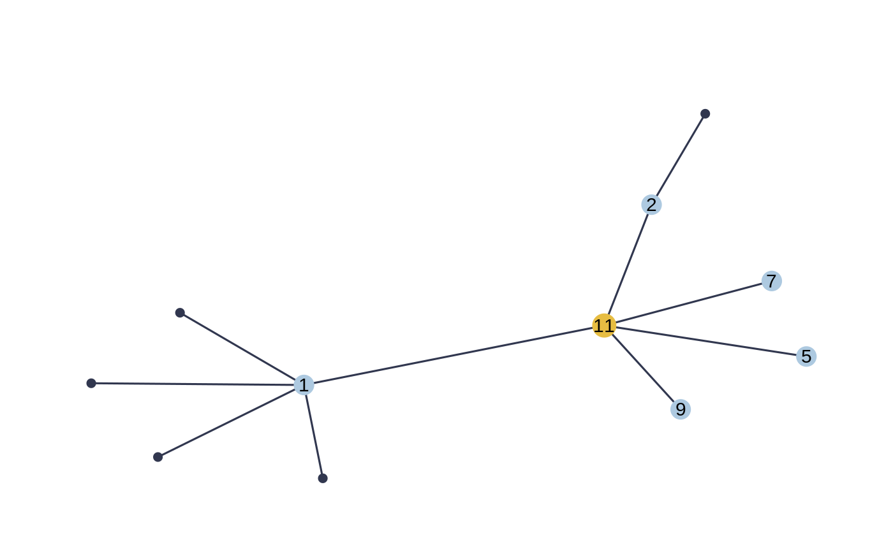

init_blockmodels.RdFind initial cliques using blockmodels on the initial marginalized network
init_blockmodels(Y, sigma_obs, MO, SO, k = 3, poisson = FALSE, alpha = 0.1, cores = 1)
| Y | count data |
|---|---|
| sigma_obs | original covariance matrix estimate |
| MO | original observed means estimate |
| SO | original observed marginal variances estimate |
| k | number of groups |
| poisson | boolean for the choice of model of blockmodel. If FALSE, runs bernoulli. |
| alpha | tempering parameter |
| cores | number of cores |
a list of possible cliques
data$TC#> [[1]] #> [1] 1 2 3 4 5 6 8 9 10 #>#> #> Initialization... #> Adjusting a PLN model with full covariance model #> Post-treatments... #> DONE!MO<-PLNfit$MO SO<-PLNfit$SO sigma_obs=PLNfit$sigma_obs #-- initialize with blockmodels init_blockmodels(data$Y,sigma_obs, MO, SO, k=2 )#> #> Likelihoods: -15.65398 , -15.63561 , -15.63555 , #> Convergence took 0.04 secs and 3 iterations. #> Likelihood difference = 5.922979e-05 #> Betas difference = 4.831772e-07 #>#> $cliqueList #> $cliqueList[[1]] #> $cliqueList[[1]][[1]] #> [1] 3 4 10 #> #> #> $cliqueList[[2]] #> $cliqueList[[2]][[1]] #> [1] 1 2 5 6 7 8 9 #> #> #>